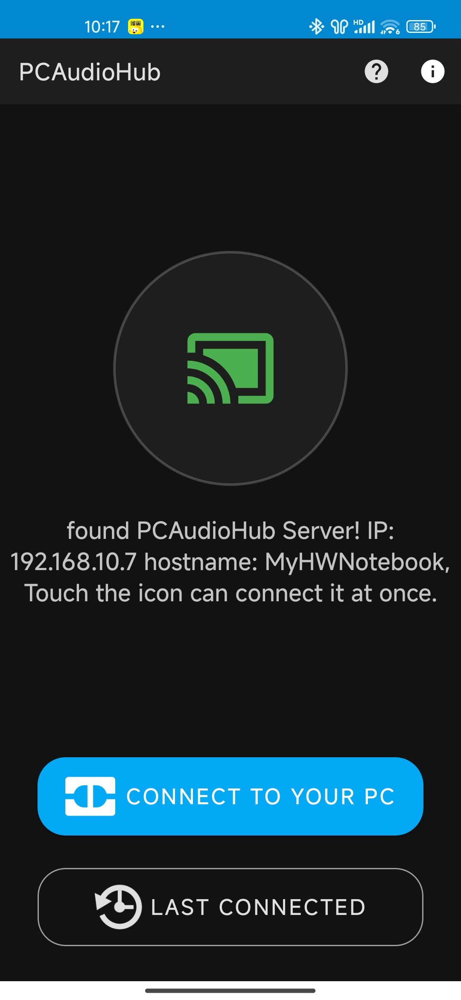
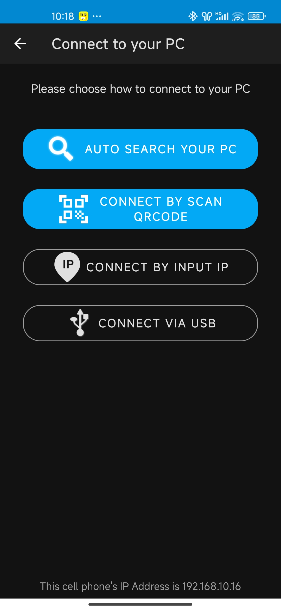
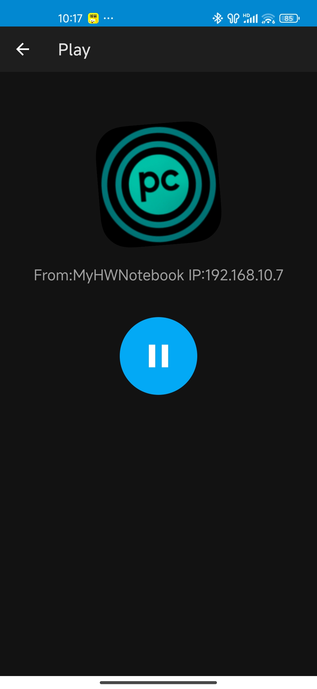

Turn Your Android Device into a Wireless/USB Speaker
PCAudioHub lets your phone become a speaker for your computer. Connect via Wi-Fi or USB, install the server app on your PC, and start streaming audio wirelessly!
Key Features
- Stream PC audio to phone via Wi-Fi or USB
- Low latency audio transmission
- Easy setup with server software
- Works on all modern Android devices
How It Works
- Connect phone and PC on the same Wi-Fi or USB
- Install PCAudioHub on your Android device
- Install the PCAudioHub Server on your PC
- Start both apps and enjoy wireless audio!
App Screenshots


